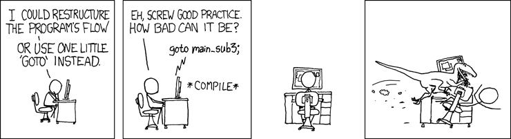
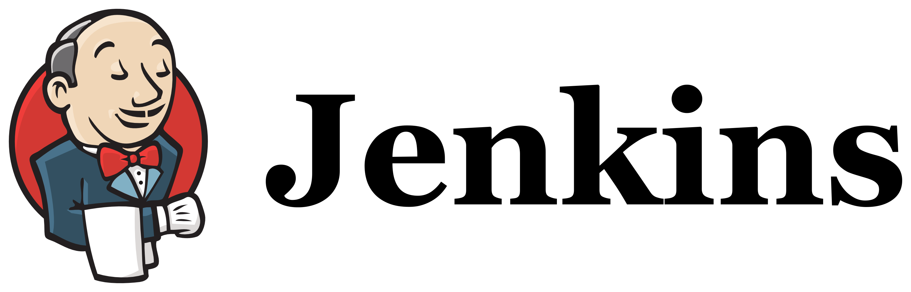

Developing Beautiful,
Measurable Software
Jeremy Mikola
jmikola

Agenda
- Training
- Metrics
- Tools
First class collections
Doctrine\Common\Collections\ArrayCollection
__construct(array $elements)count()getIterator()slice($offset, $length)matching(Criteria $criteria)
exists(Closure $p)filter(Closure $p)forAll(Closure $p)map(Closure $p)partition(Closure $p)
Collection interface extends
Countable, IteratorAggregate, ArrayAccess
What else can we measure?
- Source lines of code
- Code coverage
- Bug density
- Cohesion and coupling
- Cyclomatic complexity
- Function points
- Custom design constraints
Cyclomatic Complexity
| CC | Complexity |
|---|---|
| 1–4 | Low |
| 5–7 | Moderate |
| 8–10 | High |
| 11+ | Very high |
PHP Quality Assurance Toolchain
by Sebastian Bergmann
PHPLOC by Sebastian Bergmann
- Measures and analyzes a project
- LOC stats per class, method
- Cyclomatic complexity
- Dependencies on methods, attributes
- Code structure
PHP_Depend by Manuel Pichler
- Code analysis and metrics
- NPath and cyclomatic complexity
- Weighted method count
- Coupling analysis
- Code rank
- Dozens of additional metrics
PHP Mess Detector by Manuel Pichler
- Frontend for PHP_Depend
- Code size, complexity
- Design (syntax, classes)
- Unused code
- Naming conventions
PHP Mess Detector by Manuel Pichler
PHP Analyzer by Johannes Schmitt
- Code analysis and fixing
- Type inference
- Suspicious, unused code
- Deprecated functionality
- Coupling and cohesion
- Framework-specific checks
Continuous Integration
jenkins-php.org by Sebastian Bergmann
Continuous Integration

Scrutinizer CI
by Johannes Schmitt
- Automated code analysis
- Code rating
- Tracking changes/stability
- External code coverage
- Automated fixes
- Refactoring tips
Beyond Clean Code
| Good Business Value | Poor Business Value | |
|---|---|---|
| Clean Code | Excellent | Bad |
| Dirty Code | Good | Garbage |